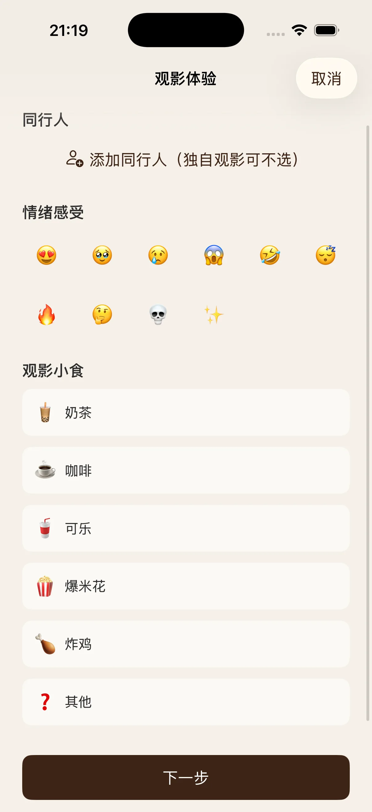

3 Product Design
产品设计
一次关键的设计转向
项目初心是"保留纸质票根的原始面貌"。但实际设计中发现，各影院票根的尺寸和版式差异很大，直接以原图展示会导致票根墙视觉混乱，因此转向设计标准化的电子票根模板。
然而这一转向几乎背离了初心——纸质票根的真实面貌反而无处安放了。
解决方案
最终方案是在 OCR 流程中加入四角精准拖动裁剪功能：用户拍摄实体票根后，可以手动裁剪出想保留的区域，裁剪结果作为票根墙封面图呈现。这样既保证了票根墙的视觉统一性，又保留了每张纸质票根的真实样貌。
模板与个性化系统
设计了三套电子票根模板，统一格式但提供不同配色风格。票面信息由 OCR 自动填入，用户也可以手动修改。模板之外，额外提供同行人、小食、情绪三个个性化记录维度。
设计原则：标准化与个性化并非对立。模板解决视觉一致性，裁剪封面增加回忆的真实性，个性化字段则保留记忆的完整性。
▶ GIF

